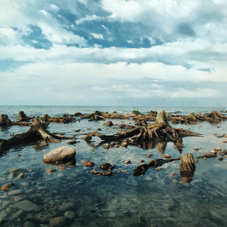

Путешествия по России
Настоящая страна не в выпусках новостей, а здесь.
ваша полка — верхняя
Чего мы там не видели?
По опросам ВЦИОМ, 95% россиян мечтают куда-нибудь поехать, но только 36% планируют провести отпуск в родной стране. Мол, чего мы тут, дома, не видели? На самом деле, Россия — это целая вселенная с ласковым морем юга, густыми лесами Саян и суровыми льдами плато Путорана. А ещё увидеть все эти красоты можно без миллионов на счету, загранпаспорта и многочасовых перелетов. Как, например, Вера Башмакова — смелая молодая мама, которая взяла в охапку троих детей, усадила их в свою «Ладу» и проехала 20 тысяч километров по родной стране. Мы выбрали и описали некоторые интересные места, достойные вашего отпуска.
-
Часовых поясов 11
-
Объектов природного наследия ЮНЕСКО 12
-
Объектов культурного наследия ЮНЕСКО 16
-
Природных заповедников 105
-
Аэропортов 241
Куршская коса

Здесь, посреди лесов и песчаных дюн, вы сможете увидеть
два водных горизонта — спокойного Куршского залива с одной
стороны и подёрнутого рябью волн Балтийского моря с другой.
Уникальная природная зона на краю российского анклава.
На этом Калининградская область не заканчивается. Для
путешественника и исследователя там же по соседству —
самая западная точка России, Балтийская коса, — и немецкое
наследие россыпи небольших приморских городов. Атмосфера
здешних мест исключает суету, окуная в спокойствие
природы и запах стального, прохладного моря.
Кольский

Почти весь полуостров находится за Полярным кругом.
Саамская тундра, от которой на юг тайга, а на север
Ледовитый океан, прикидывающийся Баренцевым морем.
Возможно, вы смотрели Звягинцева и даже слышали
историю арктического фестиваля в Териберке. Возможно,
слово «Хибины» не осталось под снегом школьных воспоминаний
об уроках географии. Возможно, вы не интересовались
пронизывающей земную кору сверхглубокой скважиной, а от
апатитов вас давно накрывает апатия. Но ваша мечта увидеть
северное сияние начинает сбываться с билетом
в Мурманск.
Алтай

Алтай — одно из красивейших мест в России.
В первую очередь из-за гор: если ехать вдоль хребта, вы
увидите склоны, усыпанные соснами, горные реки и озёра.
А если вы откроете в автомобиле окна, сможете познакомиться
с невидимым чудом здешних мест — горным воздухом.
Климат на Алтае умеренный, поэтому ехать сюда лучше всего
летом. Так вы увидите всё разнообразие местной флоры и
фауны. По лесам Алтая бродят лоси, над хребтами летают
орлы, а на равнинах пасутся косули. И знаменитые манулы —
тоже обитатели Алтайского края.
Зимний Байкал

Всем известен Байкал как крупнейшее озеро
в мире. Многие также знают, что это самый большой источник
пресной воды и одно из красивейших мест в России.
Конечно, это всё так. Но Байкал ещё идеальное место для
соревнований по скийорингу. Это такой вид спорта, когда
лыжник привязывает себя к мотоциклу, и тандем старается
развить как можно бóльшую скорость на льду. В марте 2019
года на фестивале «Байкальская миля» был поставлен мировой
рекорд — 197.011 км/ч.
Карелия

Сибирь заканчивается не на Урале, а в Карелии: образующая
тайгу сибирская лиственница не растёт западнее Водлозера.
Зато здесь она вымахивает на 30 метров — леса карельских
национальных парков из-за непроходимых болот никогда не
знали топора. Некоторым соснам уже больше чем полтысячелетия.
Прикоснитесь к живому существу, видевшему солнце раньше, чем
увидал его Иван Грозный. В девственном лесу на сотню километров
не встретишь тропы. А на редких тропинках деревья в паре метров
от земли помечены медвежьими когтями. Чтобы все знали, кто тут хозяин.